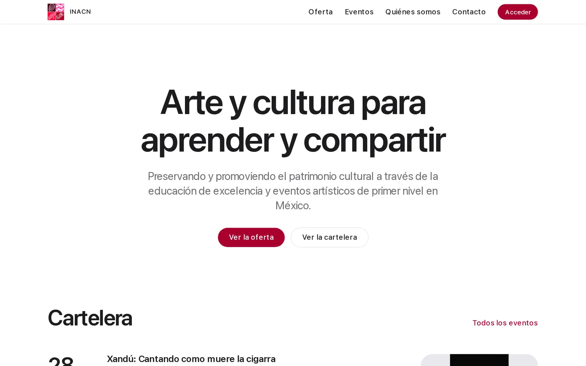

PSI
Next.js · TypeScript · PostgreSQL
La Plataforma de Servicios Institucionales del Instituto de Geofísica de la UNAM. Reúne en un solo lugar los trámites y servicios del Instituto, con cuentas, roles por unidad y avisos. Está en producción.
Construyo plataformas web para instituciones y, por mi cuenta, apps para resolver cosas mías.
TypeScript, Swift y Kotlin · México
Next.js · TypeScript · PostgreSQL
La Plataforma de Servicios Institucionales del Instituto de Geofísica de la UNAM. Reúne en un solo lugar los trámites y servicios del Instituto, con cuentas, roles por unidad y avisos. Está en producción.
AWS Lambda · Bedrock
El asistente de PSI: ayuda a encontrar y preparar trámites, y nada se ejecuta hasta que la persona lo confirma. Proyecto de Amazon DevDays Latam, en el tema de agentes con serverless.

Next.js · TypeScript
Sitio y plataforma del Instituto Nacional de Artes y Cultura Nocheztli, en la Ciudad de México: oferta educativa, cartelera, convocatorias, inscripciones y constancias.
Next.js · Stripe
Venta de boletos para actividades culturales: recintos con asientos numerados, boletos con QR y registro de entrada. Es donde se venden los eventos de INACN.
Swift · iPad y Mac
Convierte las Motion Photos de un teléfono Samsung en Live Photos de Apple. No recodifica nada: copia la imagen tal cual y solo reescribe el dato que une la foto con su video, así que se conservan el HDR, la fecha y la ubicación.